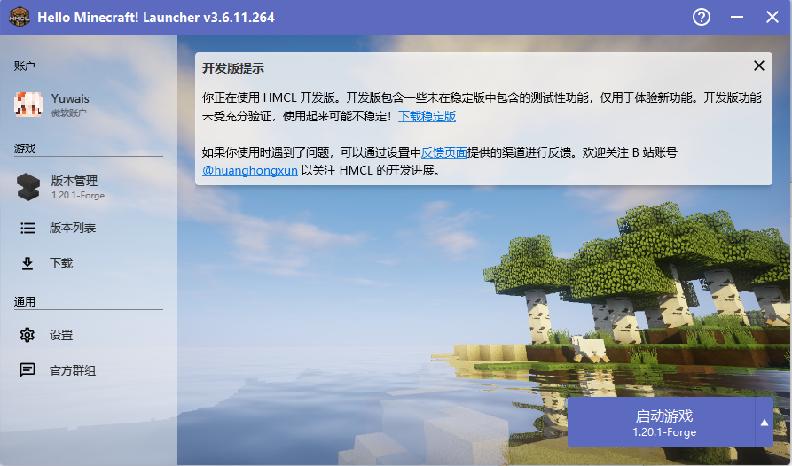
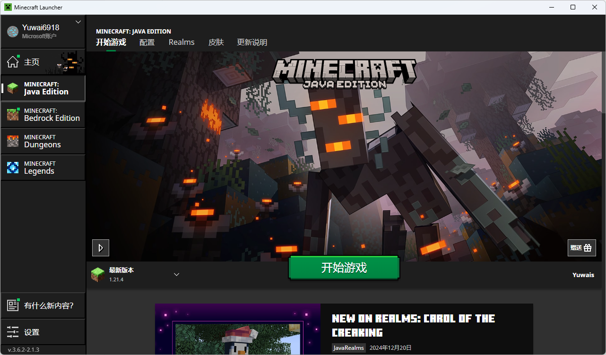
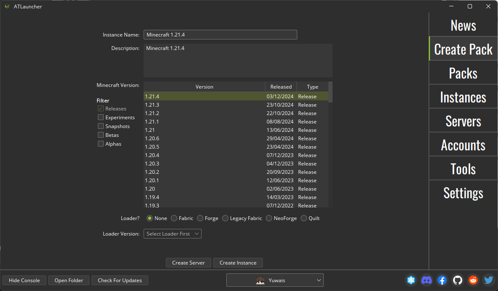

启动器下载
· HMCL启动器

特点：
1.用的是国内源且下载源多，pcl下不了的hmcl可以下
2.可以直接导出整合包
3.有Mac与Linux版本
4.不知道了
· PCL2启动器

特点：
1.有用国内源，但hmcl的更稳定
2.百宝箱中可以进行内存优化、清理垃圾，特别是那个千万别点
3.自带多线程下载器
4.帮助界面很有帮助，教程很详细
5.不知道了
· 官方启动器

特点：
1.可以启动基岩版、地下城等非Java版本
2.不知道了
缺点：
安装模组、整合包等东西不方便，且使用的不是国内源
不建议作为Java版启动器使用
· ATLauncher

特点：
1.相比PCL2和hmcl看起来更正规一些（不知道正规来形容恰不恰当）
2.功能更丰富，但不一定用得上
3.可以导出整合包，个人认为比hmcl的导出功能好一些
4.个人认为启动Servers版更加方便，但不一定用得上
缺点：
使用的不是国内源而是国外源，安装版本时可能较慢或失败
需要手动汉化
· IDEA启动器
特点：
可以制作模组，调式方便
缺点：
其他都是缺点
你还真想用这个？